ExtendedSceneEnvironment QML Type
A SceneEnvironment providing commonly used rendering effects. More...
| Import Statement: | import QtQuick3D.Helpers |
| Since: | Qt 6.5 |
| Inherits: |
Properties
- adjustmentBrightness : real
- adjustmentContrast : real
- adjustmentSaturation : real
- colorAdjustmentsEnabled : bool
- depthOfFieldBlurAmount : real
- depthOfFieldEnabled : bool
- depthOfFieldFocusDistance : real
- depthOfFieldFocusRange : real
- ditheringEnabled : bool
- exposure : real
- fxaaEnabled : bool
- glowBlendMode : int
- glowBloom : real
- glowEnabled : bool
- glowHDRMaximumValue : real
- glowHDRMinimumValue : real
- glowHDRScale : real
- glowIntensity : real
- glowLevel : int
- glowQualityHigh : bool
- glowStrength : real
- glowUseBicubicUpscale : bool
- lensFlareApplyDirtTexture : bool
- lensFlareApplyStarburstTexture : bool
- lensFlareBloomBias : real
- lensFlareBloomScale : real
- lensFlareBlurAmount : real
- lensFlareCameraDirection : vector3d
- lensFlareDistortion : real
- lensFlareEnabled : bool
- lensFlareGhostCount : int
- lensFlareGhostDispersal : real
- lensFlareHaloWidth : real
- lensFlareLensColorTexture : Texture
- lensFlareLensDirtTexture : Texture
- lensFlareLensStarburstTexture : Texture
- lensFlareStretchToAspect : real
- lutEnabled : bool
- lutFilterAlpha : real
- lutSize : real
- lutTexture : Texture
- sharpnessAmount : real
- tonemapMode : enumeration
- vignetteColor : color
- vignetteEnabled : bool
- vignetteRadius : real
- vignetteStrength : real
- whitePoint : real
Detailed Description
The ExtendedSceneEnvironment is an extension of QtQuick3D's SceneEnvironment type that comes with a collection of commonly used effects built-in. The effects are exposed through a set of properties that are prefixed with the name of the effect they control.
When enabling one or more of these effects, the result is similar to manually adding post-processing effects to the SceneEnvironment's effects list. ExtendedSceneEnvironment provides however effects that are not available in standalone form, and more importantly, it efficiently combines the effects that are enabled, reducing the number of additional render passes needed, which can lead to significantly better performance than applying individual post-processing effects to the scene. ExtendedSceneEnvironment also plays well with tonemapping, even for the more complicated multiple pass effects, and also when multiple effects are enabled and combined together. This was not always the case with standalone effects.
Note: If additional post-processing effects are added to the effects list of SceneEnvironment, then those effects will be applied before the effects provided by the ExtendedSceneEnvironment type.
Certain features of SceneEnvironment, such as the tonemapping, are inherited and extended with additional properties in ExtendedSceneEnvironment. For example, SceneEnvironment offers the tonemapMode property, whereas ExtendedSceneEnvironment adds control over the exposure, white point, sharpening, and dithering settings of the tonemapper as well. The tonemapMode property is not duplicated however since ExtendedSceneEnvironment inherits everything from SceneEnvironment, so the base setting of the tonemapping mode is usable regardless of which type of environment is associated with a View3D, but the additional properties are available only when using ExtendedSceneEnvironment. Other effects, such as screen space ambient occlusion (SSAO) or fog are fully part of SceneEnvironment and are usable with both types of environments.
Getting Started with ExtendedSceneEnvironment
To use the additional features offered by ExtendedSceneEnvironment, associate the View3D with an instance of it. Do not forget to import the QtQuick3D.Helpers module.
import QtQuick3D import QtQuick3D.Helpers View3D { environment: ExtendedSceneEnvironment { tonemapMode: SceneEnvironment.Filmic vignetteEnabled: true // ... } }
Note: Experimenting with the effect parameters and tuning the values to achieve the desired visual results can often be more productive when done visually, with controls such as sliders that give instant feedback in the rendered scene when a value is changed. Using a designer tool such as Qt Design Studio, or a test bed similar to the Qt Quick 3D - Scene Effects Example is therefore often recommendable when aiming to set up a high quality scene that looks visually appealing.
Note: Switching SceneEnvironment to ExtendedSceneEnvironment automatically implies at least one additional render pass, just as if an Effect with a single pass was added to the SceneEnvironment's effect list. This is true regardless of how many of the individual post-processing steps are enabled. (the more complex effects may involve more than one additional render pass)
Available Effects
Below is an overview of the effects and related features provided by ExtendedSceneEnvironment, including features inherited from SceneEnvironment.
- Tonemapping - Controls how colors are tonemapped from high definition range to the 0-1 range before being displayed. ExtendedSceneEnvironment adds additional controls over the exposure, white point, sharpening, and dithering.
Controlled by the properties tonemapMode, exposure, whitePoint, ditheringEnabled.
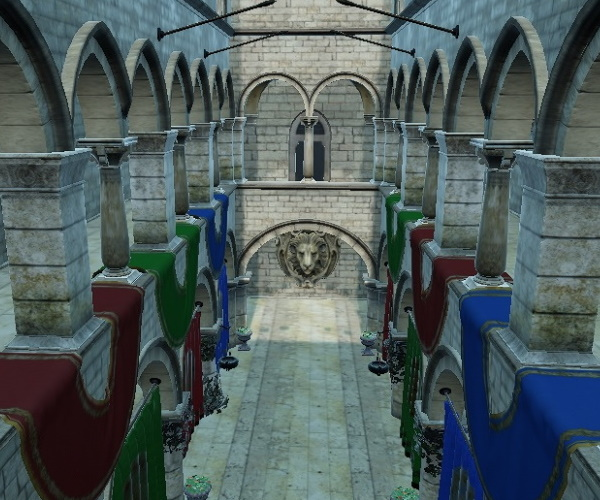
- Color adjustments - Brightness, contrast, saturation adjustment.
Controlled by the properties colorAdjustmentsEnabled, adjustmentBrightness, adjustmentContrast, adjustmentSaturation.
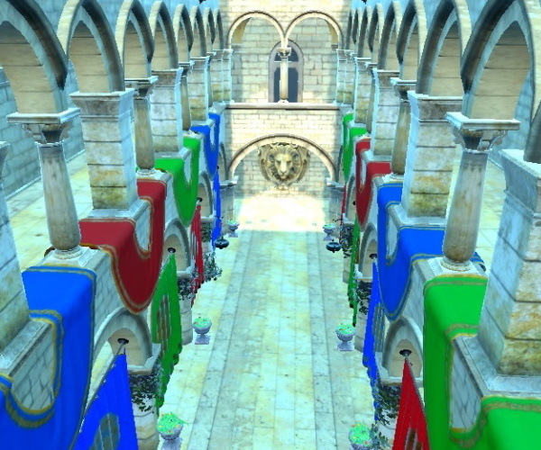
- Color grading via lookup table (LUT) textures.
Controlled by the properties lutEnabled, lutSize, lutFilterAlpha.
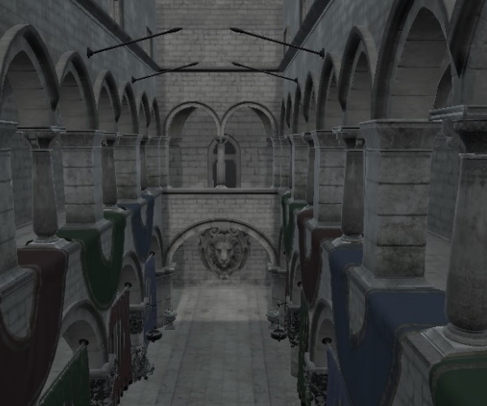
- Depth of field
Controlled by the properties depthOfFieldEnabled, depthOfFieldFocusDistance, depthOfFieldFocusRange, depthOfFieldBlurAmount.
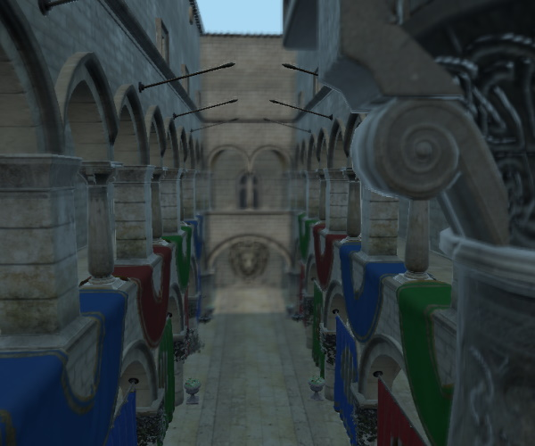
- Glow and bloom
Controlled by the properties glowEnabled, glowQualityHigh, glowUseBicubicUpscale, glowStrength, glowIntensity, glowBloom, glowBlendMode, glowHDRMaximumValue, glowHDRMinimumValue, glowHDRScale.
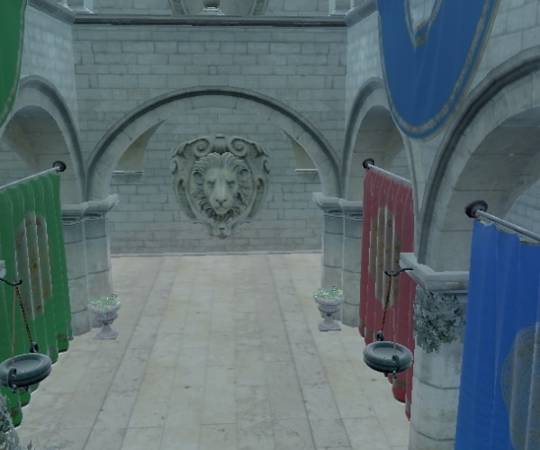
- Vignette
Controlled by the properties vignetteEnabled, vignetteStrength, vignetteColor, vignetteRadius.
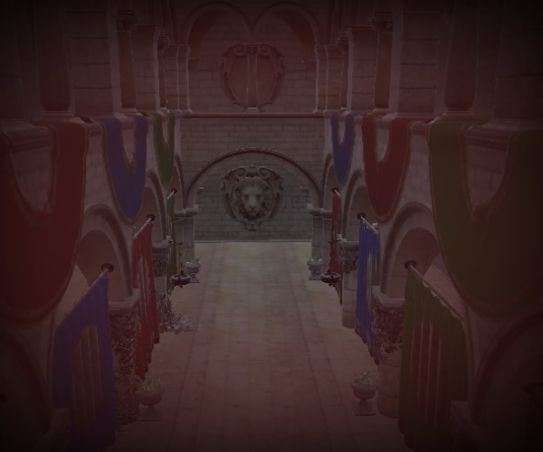
- Lens flare
Controlled by the properties lensFlareEnabled, lensFlareBloomBias, lensFlareGhostDispersal, lensFlareGhostCount, lensFlareHaloWidth, lensFlareStretchToAspect, lensFlareDistortion, lensFlareBlurAmount, lensFlareApplyDirtTexture, lensFlareApplyStarburstTexture, lensFlareCameraDirection, lensFlareLensColorTexture, lensFlareLensDirtTexture, lensFlareLensStarburstTexture.
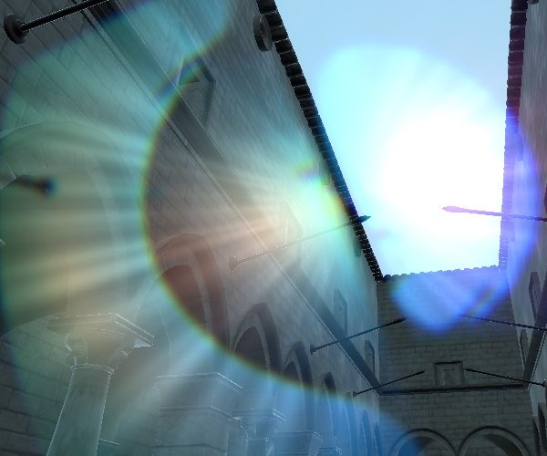
- Screen space ambient occlusion - Provided by SceneEnvironment.
Controlled by SceneEnvironment::aoEnabled, SceneEnvironment::aoStrength, SceneEnvironment::aoDistance, SceneEnvironment::aoSoftness, SceneEnvironment::aoDither, SceneEnvironment::aoSampleRate, SceneEnvironment::aoBias.
- Fog - Provided by SceneEnvironment. This is not a post-processing type of effect, but is rather applied to the materials of the renderable objects in the scene.
Controlled by the Fog object associated with the SceneEnvironment::fog property.
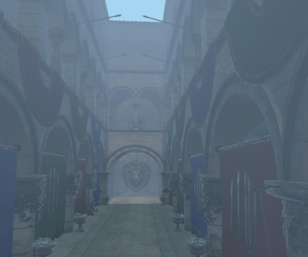
- Antialiasing - Multisampling, supersampling, progressive antialiasing, specular antialiasing, temporal antialiasing are provided by SceneEnvironment. ExtendedSceneEnvironment adds the option for using a form of FXAA.
FXAA is controlled by fxaaEnabled. Other antialiasing modes are controlled by SceneEnvironment::antialiasingMode, SceneEnvironment::temporalAAEnabled, SceneEnvironment::temporalAAStrength, and SceneEnvironment::specularAAEnabled.
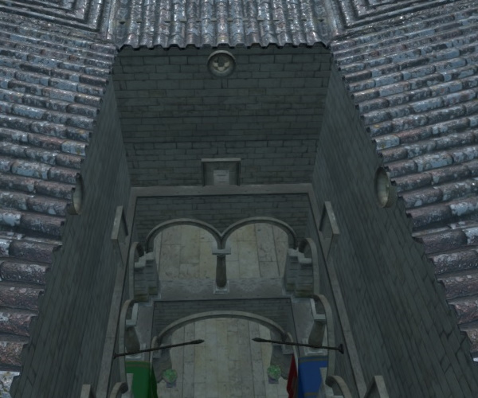
See also SceneEnvironment and Qt Quick 3D - Scene Effects Example.
Property Documentation
adjustmentBrightness : real |
Adjusts the brightness of the scene.
| Brightness of 1 | Brightness of 4 |
|---|---|
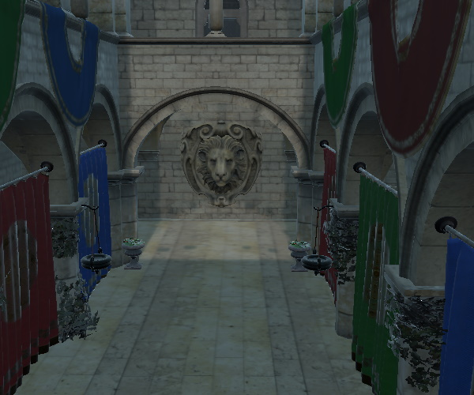 | 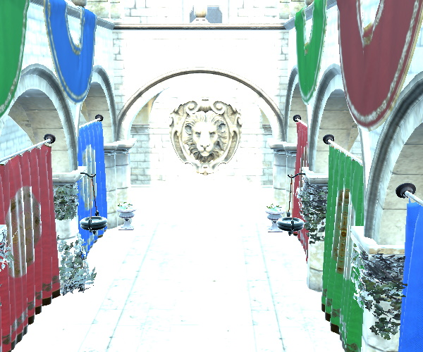 |
adjustmentContrast : real |
Adjusts the contrast of the scene.
| Contrast of 1 | Contrast of 4 |
|---|---|
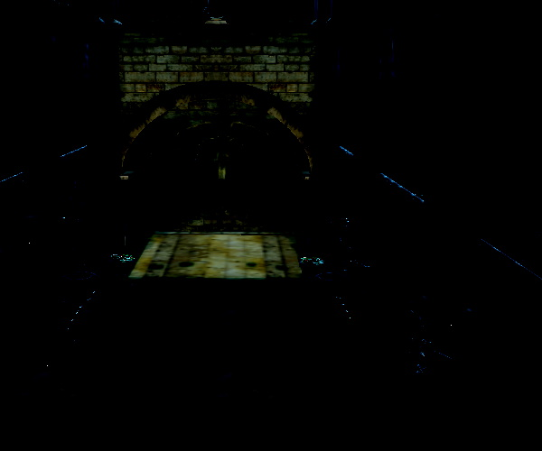 |
adjustmentSaturation : real |
Adjusts the saturation of the scene.
| Saturation of 1 | Saturation of 4 |
|---|---|
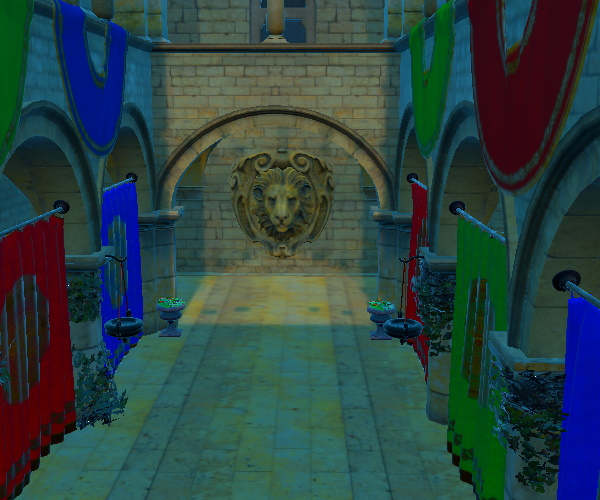 |
colorAdjustmentsEnabled : bool |
Enables color adjustments.
See also colorAdjustmentsEnabled.
depthOfFieldBlurAmount : real |
amount of blur applied to objects outside the focus range. Sensible values are in the range 0 to 10. A value of 0 applies no additional blur.
| Blur amount of 0 | Blur amount of 15 |
|---|---|
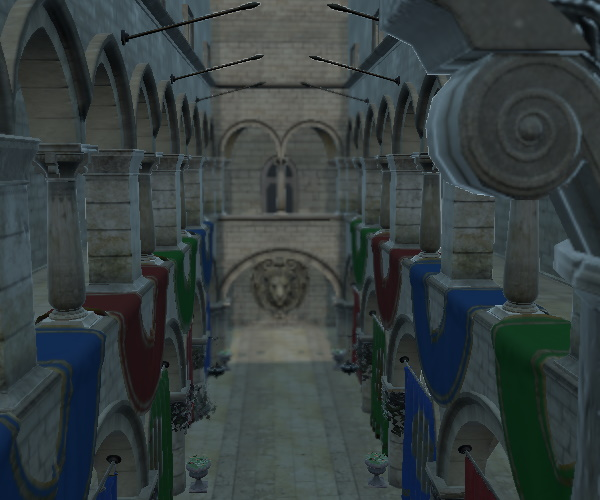 |
depthOfFieldEnabled : bool |
Enables the depth of field blur effect.
depthOfFieldFocusDistance : real |
Sets the distance from the camera at which objects are in focus.
Here the Sponza scene has a scale of 100 applied in order to have a suitably big range to get blur applied to the back and the front of the view. The picture below is taken with a focus distance of 753 and a focus range of 482.
depthOfFieldFocusRange : real |
The distance around the depthOfFieldFocusDistance where items are fully in focus. The focus then fades away to fully blurred by the same distance on both the near and far sides.
ditheringEnabled : bool |
Enables dithering to reduce banding artifacts.
exposure : real |
Exposure level used by the tonemapper.
| Filmic tonmapping with exposure 8 | Filmic tonmapping with exposure set to 0.5 |
|---|---|
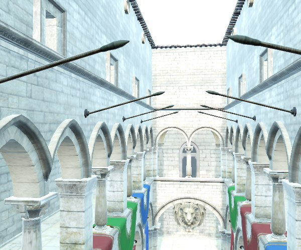 | 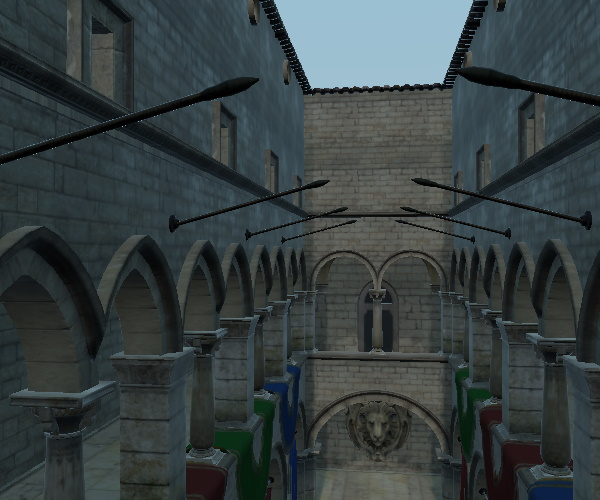 |
fxaaEnabled : bool |
Enables fast approximate anti-aliasing (FXAA).
| FXAA disabled | FXAA enabled |
|---|---|
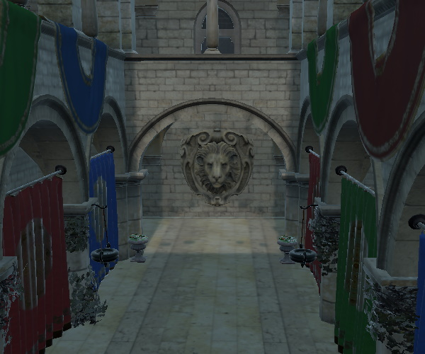 | 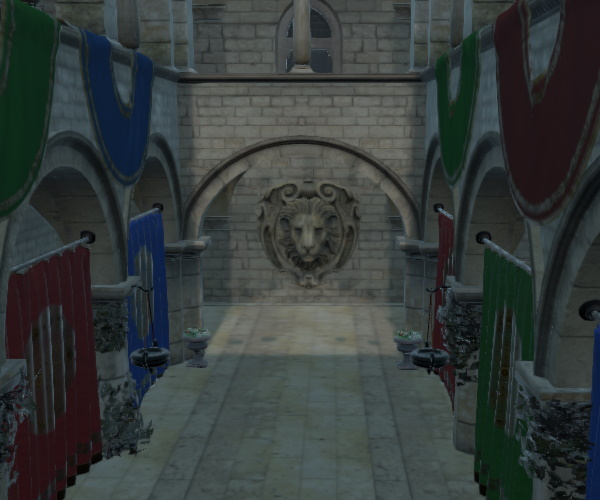 |
glowBlendMode : int |
Blending mode for the glow effect.
Available modes are:
- ExtendedSceneEnvironment.GlowBlendMode.Additive
- ExtendedSceneEnvironment.GlowBlendMode.Screen
- ExtendedSceneEnvironment.GlowBlendMode.SoftLight
- ExtendedSceneEnvironment.GlowBlendMode.Replace
Additive is often recommendable for outdoor scenes, where a sky or sun is visible, whereas the default SoftLight may work better for in-door environments.
Replace does not perform any blending, but rather results in displaying only the contribution the glow/bloom effect would blend with the actual content. In practice this can be useful for experimenting and troubleshooting when setting up the parameters of a glow/bloom effect.
| Blend mode | Example |
|---|---|
| Glow disabled | |
| Additive | |
| Screen | 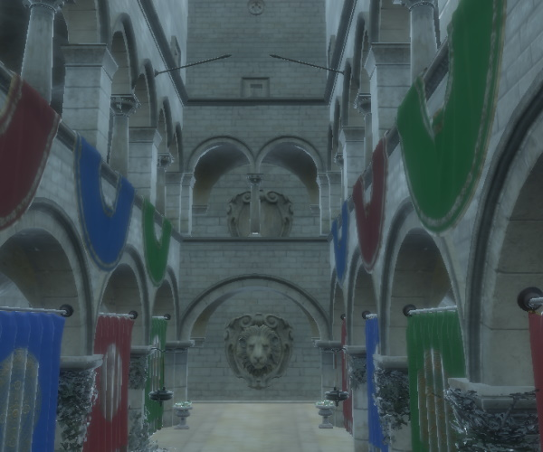 |
| SoftLight | 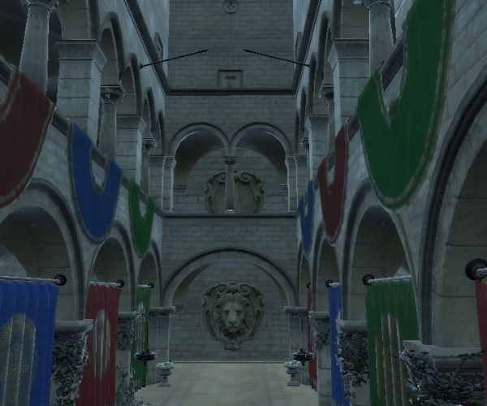 |
| Replace | 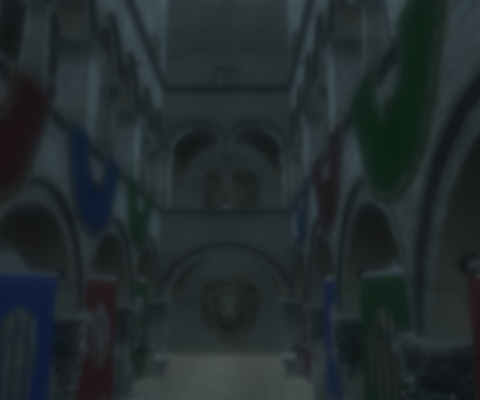 |
glowBloom : real |
Sets the amount of bloom applied to the glow effect. Values from 0 to 1 are expected.
The glowHDRMinimumValue, glowHDRMaximumValue, glowHDRScale, and glowBloom values together control the amount of luminance feedback generated by the glow/bloom effect.
In practice the values for glowStrength, glowIntensity, and glowBloom will often be tuned together to achieve the desired results.
For example, with four glow levels enabled, a strength of 1.5, and an intensity of 1:
| glowBloom set to 0 | glowBloom set to 0.5 |
|---|---|
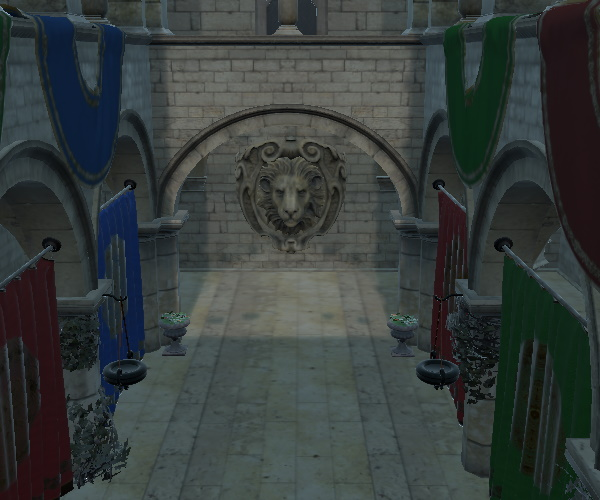 | 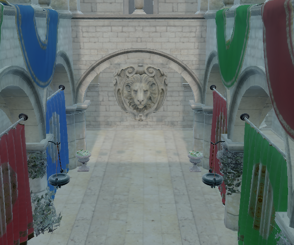 |
glowEnabled : bool |
Enables the glow effect. It can also provide bloom, when the value of glowBloom is larger than 0.
glowHDRMaximumValue : real |
Sets the maximum brightness of the glow, in high dynamic range. Value range is from 0 to 256.
The glowHDRMinimumValue, glowHDRMaximumValue, glowHDRScale, and glowBloom values together control the amount of luminance feedback generated by the glow/bloom effect.
glowHDRMinimumValue : real |
Sets the minimum brightness of the glow, in high dynamic range. Expected values are in the range 0 to 4.
The glowHDRMinimumValue, glowHDRMaximumValue, glowHDRScale, and glowBloom values together control the amount of luminance feedback generated by the glow/bloom effect.
glowHDRScale : real |
The bleed scale of the HDR glow. Expected values are in the range 0 to 8.
The glowHDRMinimumValue, glowHDRMaximumValue, glowHDRScale, and glowBloom values together control the amount of luminance feedback generated by the glow/bloom effect.
glowIntensity : real |
Glow intensity. Expected values are in the range 0 to 8.
The intensity is effectively a scale factor (multiplier) for the accumulated glow color (including all levels).
In practice the values for glowStrength, glowIntensity, and glowBloom will often be tuned together to achieve the desired results.
For example, with a glowStrength of 1.0 and glowBloom of 0.25:
| glowIntensity of 0.25 | glowIntensity of 1.25 |
|---|---|
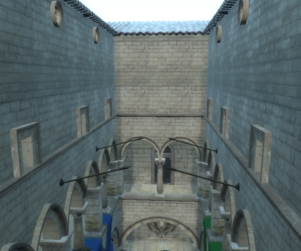 | 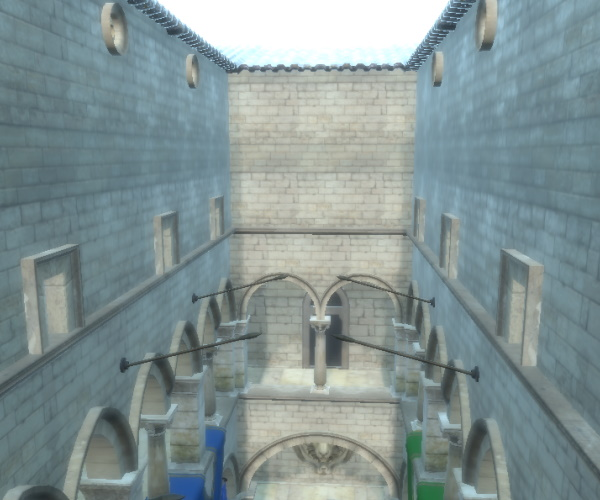 |
glowLevel : int |
Sets which of the blur passes get applied to the glow effect. There are a total of 7 levels available.
Not having any levels set means that the glow will have no visual effect.
For example, to enable Glow Level One and Six we just OR the two enums together:
glowLevel = (ExtendedSceneEnvironment.GlowLevel.One | ExtendedSceneEnvironment.GlowLevel.Six)
| glowLevel value | Example |
|---|---|
| One | 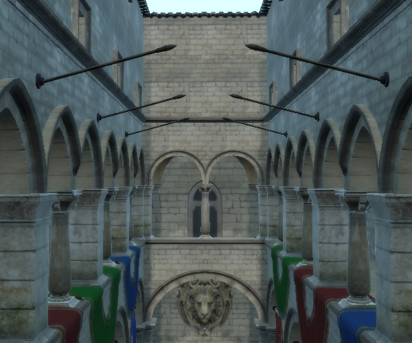 |
| One | Two | 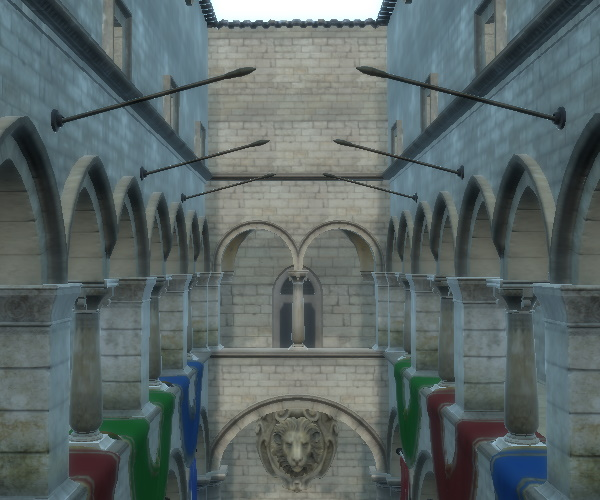 |
| One | Two | Three | 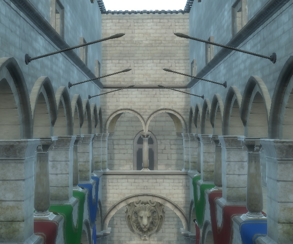 |
| One | Two | Three | Four | 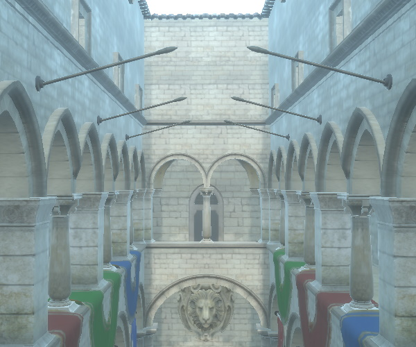 |
glowQualityHigh : bool |
Increases the samples used for the glow when downsampling to improve the quality of the glow effect.
Note: Enabling this is a trade off between rendering quality and performance. Consider if dithering can be used instead.
glowStrength : real |
Glow strength. Acceptable values are from 0 to 2.
The strength is effectively a scale factor (multiplier) that is applied per-level. This means the the more levels are enabled in glowLevel, the more pronounced effect a larger glowStrength has.
In practice the values for glowStrength, glowIntensity, and glowBloom will often be tuned together to achieve the desired results.
For example, with a glowIntensity of 1.0, glowBloom of 0.25, and the first four levels enabled:
| glowStrength of 0.5 | glowStrength of 1.5 |
|---|---|
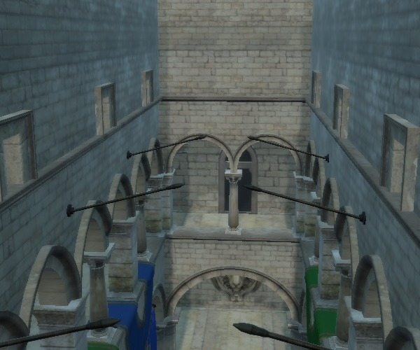 | 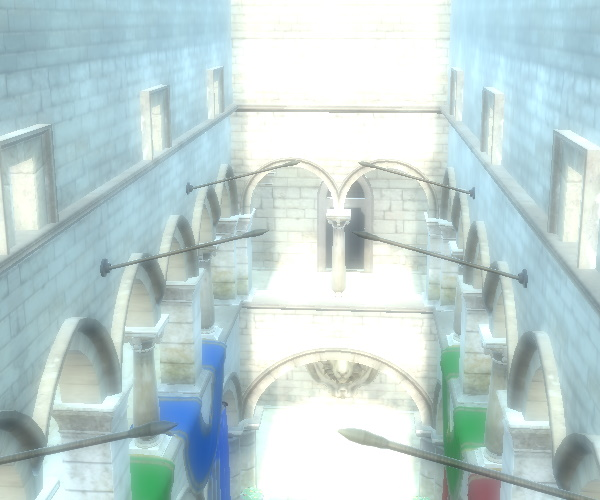 |
glowUseBicubicUpscale : bool |
Reduces the aliasing artifacts and boxing in the glow effect.
Note: Using bi-cubic up-scaling will come at the cost of performance. Consider if dithering can be used instead.
lensFlareApplyDirtTexture : bool |
Set whether to apply a dirt texture to the lens flare.
| Dirt texture disabled | Default dirty texture enabled |
|---|---|
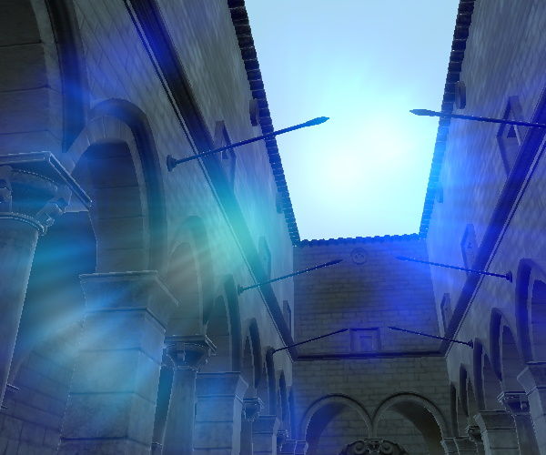 |
|

See also lensFlareLensDirtTexture.
lensFlareApplyStarburstTexture : bool |
Set whether to apply a starburst texture to the lens flare.
| Starburst texture disabled | Default starburst texture enabled |
|---|---|
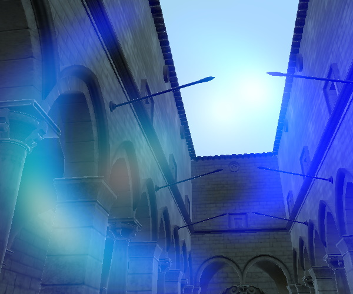 | 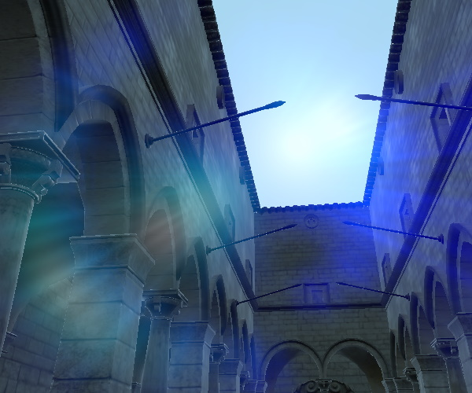 |
See also lensFlareLensStarburstTexture.
lensFlareBloomBias : real |
Sets the level at which the lens flare bloom starts.
The bias value is subtracted from the high dynamic range color value, with the result clamped to 0. This means that, depending on the scene, it may sometimes need be set to a quite low value, e.g. below 1, in order to make the lens flare obvious. Hence the default of 0.95. Whereas when having a higher range of colors, a bigger value may make more sense.
| Bias of 0.81 | Bias of 0.31 |
|---|---|
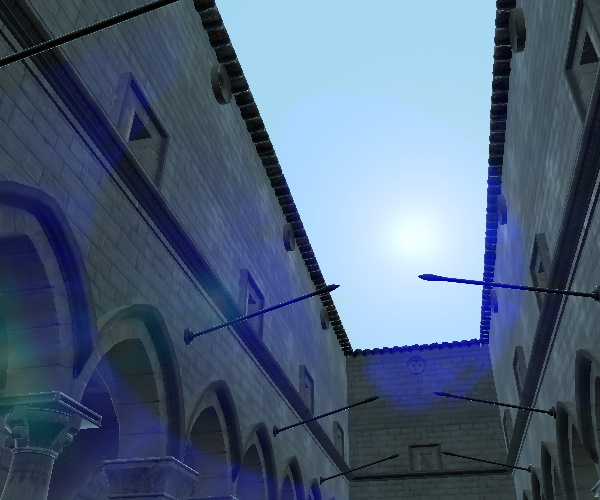 | 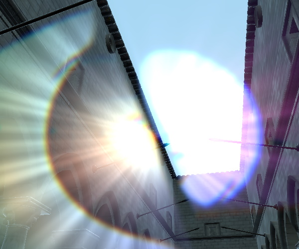 |
lensFlareBloomScale : real |
Sets the scale of the lens flare bloom effect. Expected scale value ranges from 0 to 20.
In practice this acts as a multiplier for the zero-clamped color value with the lensFlareBloomBias subtracted.
| Scale 2, bias 0.81 | Scale 20, bias 0.81 |
|---|---|
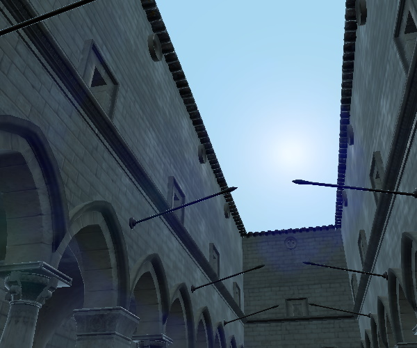 | 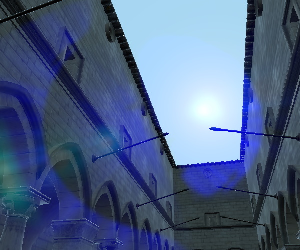 |
lensFlareBlurAmount : real |
Set amount of blur to apply to the lens flare. Ranges from 0 to 50.
| Blur amount set to 0 | Blur amount set to 30 |
|---|---|
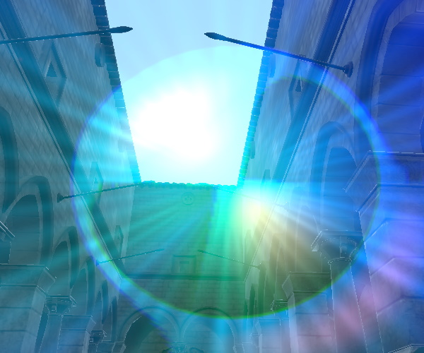 | 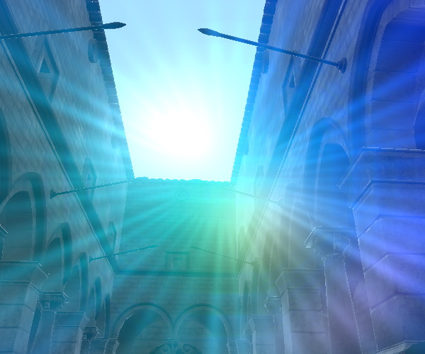 |
lensFlareCameraDirection : vector3d |
Sets the direction of the camera in the scene.
lensFlareDistortion : real |
Set amount of chromatic aberration in the lens flare. Expected values ranges from 0 to 20.
| Distortion set to 0 | Distortion set to 15 |
|---|---|
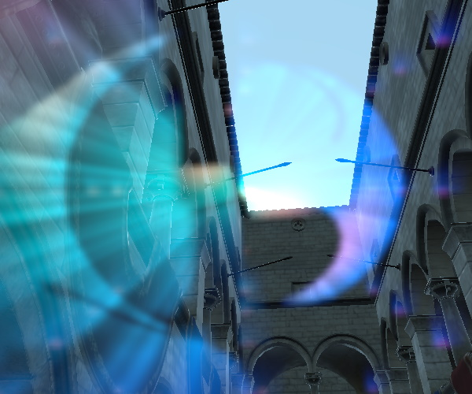 | 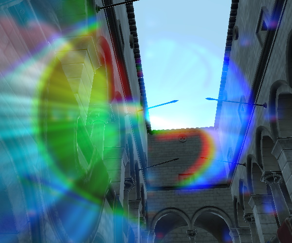 |
lensFlareEnabled : bool |
Enables the lens flare effect.
Once enabled, the first property to tune is typically lensFlareBloomBias.
lensFlareGhostCount : int |
Sets the amount of lens flare ghosts. Expected values are from 0 to 20.
| Ghost count of 2 | Ghost count of 16 |
|---|---|
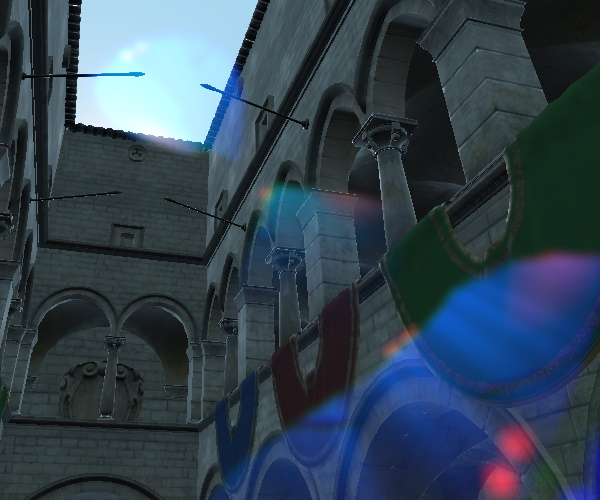 | 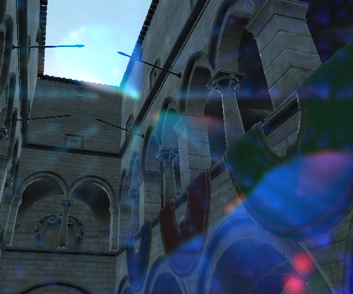 |
lensFlareGhostDispersal : real |
Sets the distance between the lens flare ghosts. Expected values are between 0 and 5. The value should be larger than 0.
| Ghost dispersal of 0.25 | Ghost dispersal of 0.90 |
|---|---|
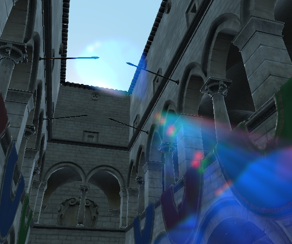 | 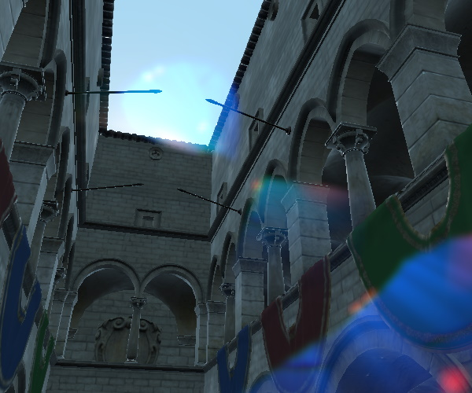 |
lensFlareHaloWidth : real |
Sets the size of the lens flare halo. Ranges from 0 to 1.
lensFlareLensColorTexture : Texture |
A gradient image used for the lens flare lens color.
By default a built-in 256x256 texture is used:
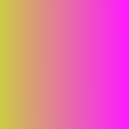
lensFlareLensDirtTexture : Texture |
An image that is used to simulate inperfections on the lens.
Has an effect only when lensFlareApplyDirtTexture is enabled.
By default a built-in dirty texture is used:
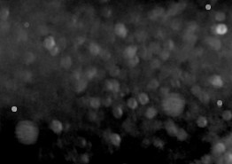
lensFlareLensStarburstTexture : Texture |
A noise image to augment the starburst effect of the lens flare. Has an effect only when lensFlareApplyStarburstTexture is enabled.
By default a built-in noise texture is used:
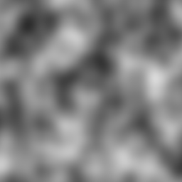
lensFlareStretchToAspect : real |
Set correction factor for roundness of the lens flare halo.
lutEnabled : bool |
Enables color grading with look-up tables (LUTs). The look-up table is given as a texture.
lutFilterAlpha : real |
Sets the amount of color grading to mix with the scene. The value is expected to be between 0 and 1.
lutSize : real |
Sets the size of the LUT texture. The texture should have the dimensions:
width = lutSize * lutSize and height = lutSize
lutTexture : Texture |
Source of look-up texture. If no texture is set a built-in identity table is used.
Pictured below is an example texture with a size of 256x16, matching the default lutSize of 16.
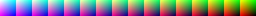
The result of this effect:
sharpnessAmount : real |
Set the sharpening amount. Valid values are from 0.0 (off) to 1.0 (full).
| Filmic tonmapping with sharpness set to 0 | Filmic tonmapping with sharpness set to 1 |
|---|---|
tonemapMode : enumeration |
This property defines how colors are tonemapped before rendering. All rendering in Qt Quick 3D is performed in linear color space and can in many cases lead to generating color values that are not displayable. The tonemapMode determines the technique that is used to remap colors into a displayable range.
The default value is SceneEnvironment.TonemapModeLinear
| Constant | Description |
|---|---|
SceneEnvironment.TonemapModeNone | All Tonemapping is bypassed. This mode is useful when performing post processing effects. |
SceneEnvironment.TonemapModeLinear | Linear tonemapping is applied. Colors are gamma corrected and returned in sRGB color space. |
SceneEnvironment.TonemapModeAces | Academy Color Encoding System tonemapping is applied. |
SceneEnvironment.TonemapModeHejlDawson | Hejl-Dawson tonemapping is applied. |
SceneEnvironment.TonemapModeFilmic | Filmic tonemapping is applied. |
Note: When using post-processing effects, many effects expect untonemapped linear color data. It is important to bypass the built-in tonemapping in this case by using the SceneEnvironment.TonemapModeNone value. This does not apply to the built-in effects of ExtendedSceneEnvironment because those automatically take care of proper tonemapping.
| Tonemap mode | Example |
|---|---|
| None | |
| Linear | |
| Aces | |
| HejlDawson | |
| Filmic |
vignetteColor : color |
Sets the color of the vignette effect.
For example, changing the color to red, pictured here with radius 4 and strength 15:
vignetteEnabled : bool |
Enables the vignette effect.
vignetteRadius : real |
Sets the radius of the vignette effect. Ranges from 0 to 5.
| Radius of 0.35 | Radius of 5.0 |
|---|---|
vignetteStrength : real |
Sets the strength of the vignette effect. Ranges from 0 to 15.
| Strength of 15 | Strength of 10 |
|---|---|
whitePoint : real |
Reference value for white when tonemapping is enabled. The value must be larger than 0.
Note: This value is ignored when using SceneEnvironment.TonemapModeLinear.
| Filmic tonmapping with white point set to 0.1 | Filmic tonmapping with white point set to 1 |
|---|---|